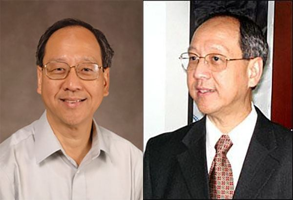

Dịch giả Nguyên Phong tên thật là Vũ Văn Du, sinh năm 1950 tại Hà Nội. Ông rời Việt Nam du học ở Hoa Kỳ từ năm 1968 và tốt nghiệp cao học ở hai ngành Sinh vật học và Điện toán.

Ngoài công việc chính là một kỹ sư cao cấp tại Boeing trong hơn 20 năm, ông vẫn tiếp tục nghiên cứu trong vai trò nhà khoa học tại Đại học Carnegie Mellon và Đại học Seattle. Ông còn giảng dạy tại một số trường đại học quốc tế tại Trung Hoa, Hàn Quốc, Nhật Bản, Ấn Độ về lĩnh vực công nghệ phần mềm.
Song song với vai trò một nhà khoa học, Nguyên Phong còn là dịch giả nổi tiếng của loạt sách về văn hóa và tâm linh phương Đông, chuyển thể từ nhiều tác phẩm của các học giả phương Tây sau quá trình tìm hiểu và khám phá các giá trị tinh thần từ phương Đông. Trong số đó, có thể kể: Hành Trình về phương Đông, Ngọc sáng trong hoa sen, Bên rặng Tuyết sơn, Hoa sen trên tuyết, Hoa trôi trên sóng nước, Huyền thuật và đạo sĩ Tây Tạng, Trở về từ cõi sáng, Minh Triết trong đời sống, Đường mây qua xứ tuyết,...